Pilar Kurikulum
Pilar Kurikulum
Taman Kanak-kanak (TK)
Dasar Keislaman
Memperkenalkan nilai agama, doa harian, surah pilihan, rukun Islam dan Iman, serta pembiasaan Al-Qur'an sejak dini.
Belajar Sambil Bermain
Mengembangkan kecerdasan anak melalui kegiatan bermain, eksplorasi, serta pembelajaran visual, auditori, dan kinestetik.
Karakter & Kemandirian
Membiasakan akhlak mulia, percaya diri, bertanggung jawab, mandiri, kreatif, dan mampu bekerja sama.
Minat & Bakat
Menggali dan mengembangkan bakat anak dalam olahraga, bahasa, seni, budaya, dan aktivitas luar ruang.
Program Unggulan
Program Unggulan
Taman Kanak-kanak (TK)
Hafalan Surat
Pendek
Membantu anak menghafal surat pendek secara bertahap melalui pembiasaan yang menyenangkan.
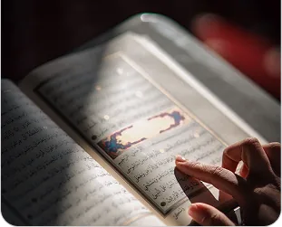
Ketauhidan dan
Aqidah
Mengenalkan nilai keimanan dan dasar aqidah melalui kegiatan yang dekat dengan keseharian anak.
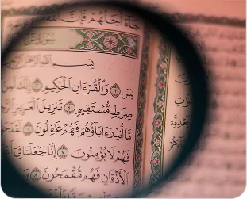
Pendidikan
Al-Quran Tilawati
Membimbing anak membaca Al-Qur'an dengan metode Tilawati yang terarah dan mudah diikuti.
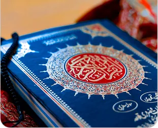
Field Trip
Profesi
Mengajak anak belajar langsung dari lingkungan sekaligus mengenal beragam profesi.
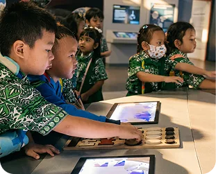
Pentas
Seni
Mendorong anak tampil percaya diri serta mengekspresikan kreativitas melalui seni.
Pekan
Budaya
Mengenalkan keragaman budaya melalui kegiatan yang interaktif, kreatif, dan menyenangkan.
Seminar
Parenting
Membantu orang tua mendampingi tumbuh kembang anak melalui wawasan pengasuhan yang relevan.
Aktivitas Luar
Ruangan
Mengembangkan motorik, keberanian, kemandirian, dan kemampuan bersosialisasi.
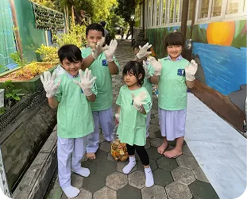
Ekstrakurikuler Unit
Ekstrakurikuler & Intrakurikuler
Taman Kanak-kanak (TK)
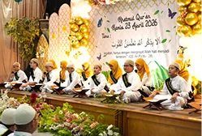
Tilawati
Belajar membaca Al-Qur'an dengan metode yang menarik.
Bahasa Inggris
Memperkuat kosakata dan percakapan berbahasa Inggris.
Renang
Melatih koordinasi tubuh dan keterampilan dasar berenang.
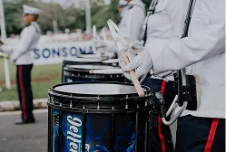
Marching Band
Mengajarkan konsentrasi, disiplin, dan kerjasama irama.
Menari
Melatih keluwesan, kreativitas, ekspresi, dan percaya diri.
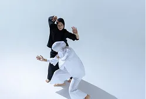
Pencak Silat
Mengembangkan disiplin, keseimbangan, dan keberanian.
Futsal
Melatih olahraga, kerja sama tim, sportivitas, dan motorik.
Sepatu Roda
Melatih keseimbangan, koordinasi tubuh, dan keberanian.
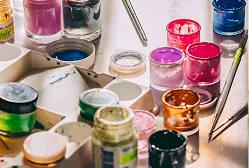
Melukis
Menyalurkan imajinasi dan kreativitas melalui warna.
Vocal
Melatih pernapasan, kepekaan nada, dan keberanian tampil.
Fasilitas Unit
Fasilitas Unggulan
Taman Kanak-kanak (TK)
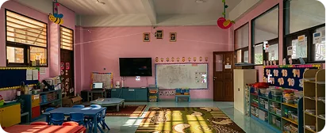
Fasilitas 1Ruang Kelas
Memberikan suasana belajar anak yang interaktif dan nyaman.
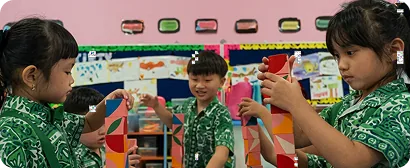
Fasilitas 2Audio Visual
Sarana audiovisual dan multimedia penunjang kegiatan belajar.
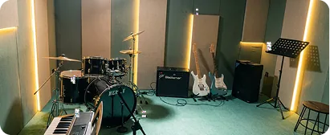
Fasilitas 3Studio Musik
Mengembangkan kreativitas dan bakat siswa dalam bermusik.
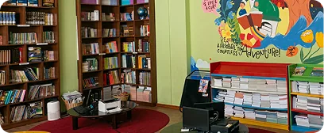
Fasilitas 4Perpustakaan
Menghadirkan ruang membaca untuk menumbuhkan minat literasi.
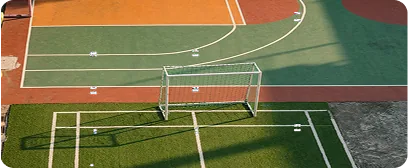
Fasilitas 5Lapangan Olahraga
Ruang aktif untuk berolahraga dan membangun sportivitas.
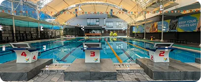
Fasilitas 6Kolam Renang
Mendukung kebugaran dan keterampilan berenang dengan aman.
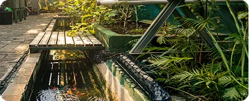
Fasilitas 7Greenhouse
Mengenalkan kepedulian lingkungan melalui pembelajaran langsung.
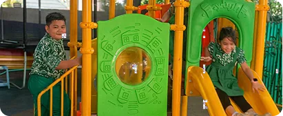
Fasilitas 8Taman Lalu Lintas
Mengenalkan aturan berlalu lintas, lalu permainan hingga praktik.
Fasilitas 9
UKS
Memberikan layanan kesehatan dasar, perlindungan pertama, serta edukasi pola hidup bersih dan sehat.
Daftarkan Putra-Putri Anda
Bergabunglah dengan keluarga besar Al-Azhar Kelapa Gading dan buka potensi terbaik ananda sejak usia dini.